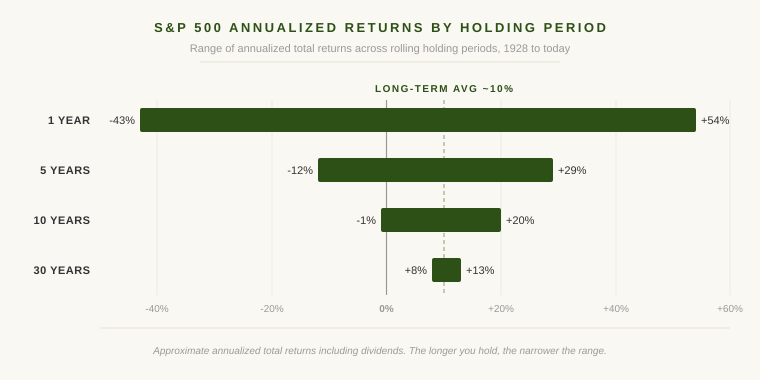

A few weeks ago, Katie and I sat down with the real estate analyzer I built for this site and ran the numbers on a small rental property. The analysis took about fifteen minutes. We had our answer and moved on.
That same afternoon, my 401(k) automatically pulled its regular contribution out of my paycheck and added to a bigger slice of roughly 500 American businesses I already own. I did not have to do anything. If we had bought that rental, Katie would spend years answering tenant texts, scheduling repairs, and screening applicants. The contribution will sit there for thirty years and compound quietly while neither of us thinks about it again.
That contrast says something important about public equities. On the metrics that matter most to a long-term investor, they are hard to beat.
How Public Equities Actually Work
A public equity is a small ownership stake in a company. You buy it on a stock exchange. The company sends part of its profits back to owners as dividends and reinvests the rest. If the business gets more valuable over time, your slice gets more valuable too. Everything else, the audits, the matching of buyers and sellers, the custody of the shares, is handled by other people.
The S&P 500 is a basket of the 500 largest U.S. publicly traded companies. Owning the index gives you a slice of nearly every major American business at once. When people talk about long-term stock market returns, they usually mean something like the S&P.
The Pitch
The long-term return has been excellent. Over very long stretches, the index has compounded at roughly 10% per year including dividends, enough to roughly double your money every seven years.
The liquidity is excellent. You can sell any business day and have cash in your account within a few days. Try doing that with a duplex.
And the workload is essentially nothing. Once the money is in the index fund, the effort required to keep it working is zero. The companies do the work. You hold the receipt.
What History Actually Says
The 10% long-term average hides a lot of variation depending on when you happened to invest. The longer you hold, the narrower the range of outcomes gets.

A bad year in the S&P can cost you almost half your money. A bad five-year window can still leave you well underwater. But stretch the holding period out to twenty or thirty years, and every period in U.S. history has been positive. The worst of those was still better than most other things you could have done with the money.
Caveat One: You Need a Long Enough Holding Period
Equities have lost money before, and they will lose money again. The problem is not the loss. The problem is the loss showing up in the year you need to sell.
If you put your house down payment in the S&P twelve months before you plan to buy, you are not investing. You are gambling. The math that makes equities attractive only works if you can wait out the bad stretches. A bear market in the year you need the money turns paper losses into real losses, and there is no recovery if the money is already gone.
The longer your runway, the more equities lean in your favor. The shorter your runway, the less business you have being there.
Caveat Two: Diversify, Because Most Stocks Lose
The S&P 500 has been a great investment. Individual stocks, on average, have not.
Hendrik Bessembinder at Arizona State has done some of the most useful research in finance over the last decade. Looking at every U.S. common stock from 1926 forward, he found that more than half had lifetime returns worse than one-month Treasury bills. Roughly four percent of stocks accounted for all of the net wealth the U.S. stock market has ever created. The other ninety-six percent collectively broke even with cash.
The S&P works because it owns the four percent without trying to. A diversified index captures the small handful of huge winners while the rest fade into the background. A portfolio of five hand-picked stocks will more likely look like the ninety-six percent.
Caveat Three: Trees Do Not Grow to the Sky
Public equities are not a law of nature. They are a structure built by people, and that structure is changing.
The number of U.S. publicly listed companies peaked at around 8,000 in the late 1990s. Today it is closer to 4,000. Companies that used to go public in their teenage years now stay private well into adulthood, raising round after round from a private capital industry that did not exist at this scale a generation ago.
Equities are a creation of policy, regulation, and habit. All of those can change, and something else may eventually replace them. The German saver who was right for sixty years eventually was not. The American equity investor has been right for a very long time. That is no guarantee about the next forty.
Why We Still Buy Real Estate Anyway
Which brings me back to Katie and the analyzer.
Equities are our default. Most of our money sits in them, compounding quietly while we do nothing. Real estate is what we add when we find a deal that justifies the additional work and risk. Any deal we look at has to project about 20% per year after expenses, not counting the value of our own time. We can rule a deal in or out in fifteen minutes. The work comes after, when Katie is finding new tenants or handling a furnace that picked the worst possible week to die.
That number probably sounds high if you are used to index fund returns. Real estate can clear that bar because of leverage. When you put 25% down on a property and earn the return on the full asset, the math on your actual equity gets dramatically better. Without leverage the bar would be unreachable.
The spread between the 10% we could earn passively in equities and the roughly 20% we want from a deal is how Katie gets paid for her work. Anything less means we are working for free. Only when the projected return gets into the 20s does the deal compensate for the work, the illiquidity, and the concentration risk.
That is how I think about public equities. Probably not literally the perfect investment, but an excellent benchmark to hold every other investment against. If the alternative cannot beat them by enough to compensate for the work and risk, it is not worth doing.